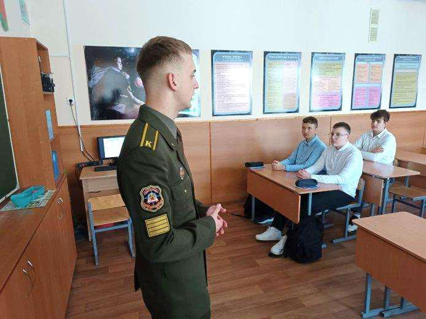
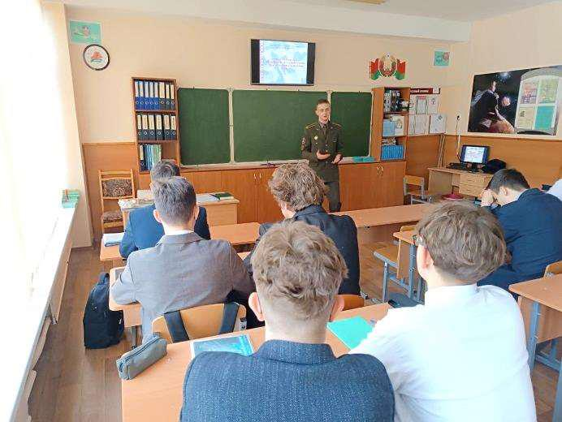

РАВНЯЙСЯ НА МЕНЯ!
Доброй традицией в Государственном учреждении образования «Гимназия №1 г. Борисова» стало участие в профориентационной работе гимназистов-выпускников. 14 ноября представить военный факультет Белорусского национального технического университета прибыл в родную гимназию курсант Илья Гарновский. Первое представление о своей будущей профессии Илья получил в январе 2022 года. Будучи гимназистом, он заметно выделялся среди своих сверстников, принимая участие во всех спортивных, культурно-досуговых и волонтерских мероприятиях. На окончательный выбор профессии, связанной с военной службой, по словам Ильи, повлияло участие в акции, проводимой военным факультетом БНТУ «Один день из жизни курсанта ВТФ». В настоящее время Илья находится на «финишной прямой», впереди государственный экзамен и долгожданные лейтенантские погоны. К слову отметить, обучаясь на факультете, курсант держит марку гимназии. В августе этого года на имя директора гимназии пришло благодарственное письмо от руководства факультета в отношении Ильи. Также курсант заслужено получает повышенное денежное довольствие.

Это уже не первая его встреча с учащимися старших классов. Выбрав путь профессионального военного, посещая гимназию, Илья всегда раскрывает гимназистам особенности профессии – Родину защищать.

В этот раз он довел ребятам особенности поступления на военный факультет и проходные балы, рассказал об условиях учебы, быта, досуга курсантов и ответил на все вопросы гимназистов.